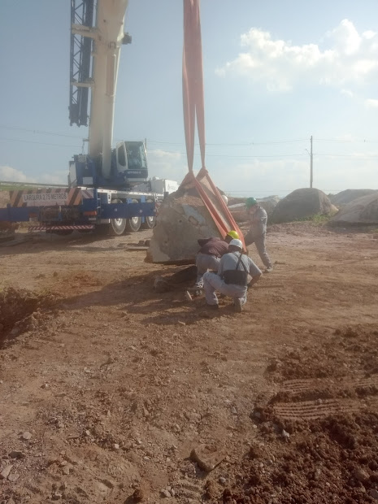
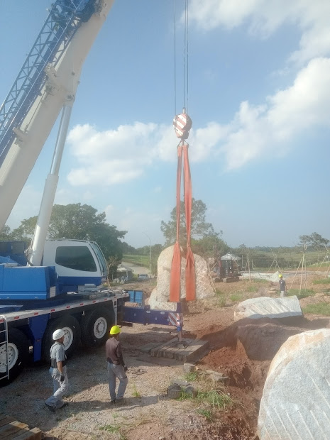
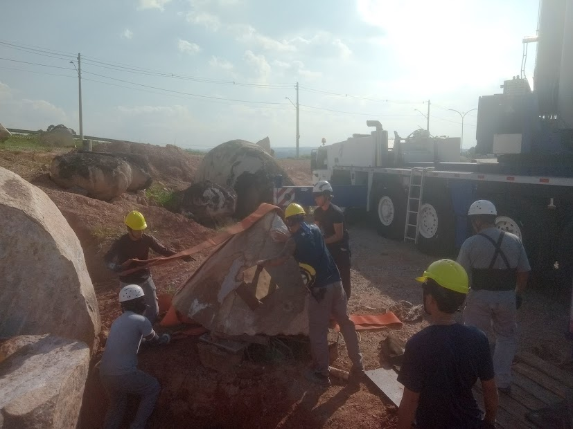

📜 Informações
Material: Granito
Ano de construção: 1952
Significado: Marco histórico da fundação da região.
Conservação: Patrimônio preservado.
🖼️ Galeria de Fotos



Registro histórico da construção, significado cultural e processo de montagem.
⬅ Voltar ao PortalMaterial: Granito
Ano de construção: 1952
Significado: Marco histórico da fundação da região.
Conservação: Patrimônio preservado.